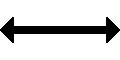

(2) Beschreibung
Mit der Mundpfeife oder dem Horn:
Zwei mäßig lange Töne.

und mit dem Arm:
Tageszeichen:
Langsame waagerechte Bewegung des Armes hin und her.
Nachtzeichen:
Langsame waagerechte Bewegung der Laterne hin und her.